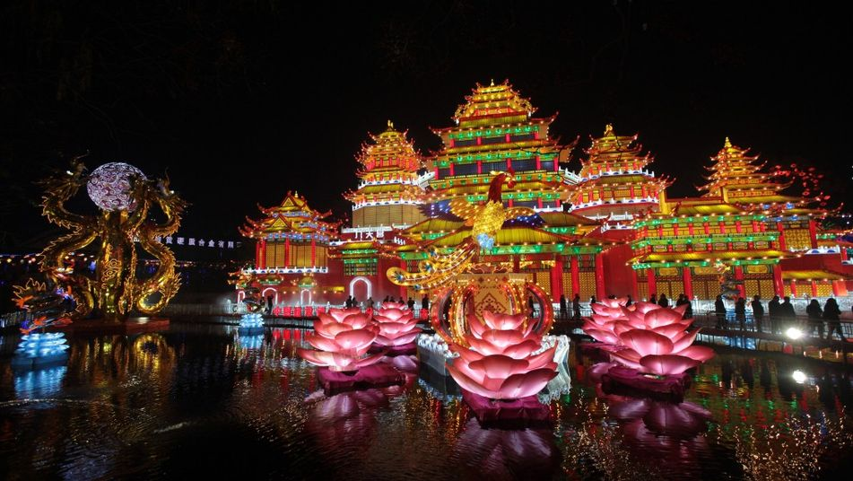
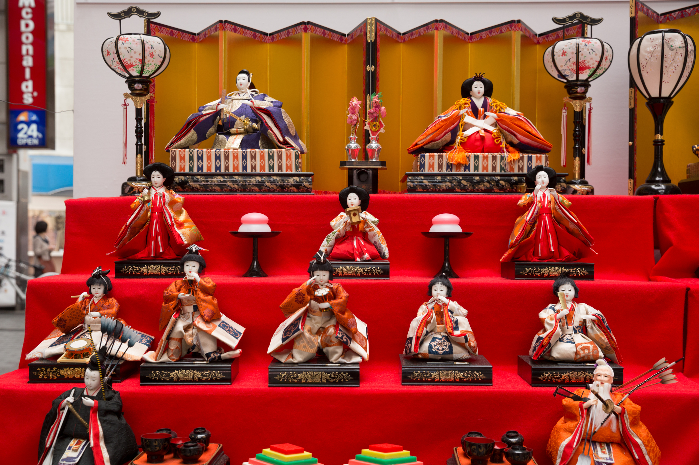

Shogatsu (正月, año nuevo)
Es quizás el evento más importante en Japón. Durante el shogatsu, la gente exhibe afuera de las casas kadomatsu, que son arreglos hechos con ramas de pino y bambú. Tradicionalmente se hacía esto para darle la bienvenida a los kami. Esta fecha es un periodo para hacer planes y nuevas resoluciones para el año que viene.
Tradicionalmente, el kadomatsu debe ponerse el 14 de diciembre porque después de esa fecha está prohibido ir a cortar pinos a las montañas. Este árbol decorativo se mantiene hasta el 14 de enero.
Durante la celebración se entregan los seibo, regalos elegidos para aquellas personas de quienes se recibió ayuda durante el transcurso del año, y el primero de enero se entregan todas las cartas de saludos de año nuevo que se guardaron en la oficina de correos para ser repartidas en un envío especial cada año.
Es también muy importante saldar las deudas antes de fin de año.

Hina Matsuri (雛祭り, Festival de muñecas)
Este festival se celebra el 3 de Marzo y consiste en la elaboración de un altar donde se exhiben hina ningyo, muñecas con vestido tradicional. En este día se reza por el bienestar y la salud de las niñas, y se ofrece sake y alimentos.
La tradición japonesa que proviene de donde se pensaba que estas muñecas podían esconder los malos espíritus en sus cuerpos, salvando así a su dueño de encuentros peligrosos una vez se librara de ellas. De esta manera, la costumbre se hizo en una ceremonia conocida en el Periodo Heian como hina nagashi, en que las muñecas de papel eran enviadas en barco por el curso de un río, llevándose consigo los malos espíritus. La costumbre se difundió durante el Período Edo, pasando de generación en generación hasta lo que hoy conocemos como Hinamatsuri.
Se dice que si las muñecas quedan expuestas más tiempo del necesario, la niña se quedará soltera de mayor o que tardará en casarse. Por ello, las muñecas suelen guardarse pronto pasado el festival, siendo el día 4 el mejor para hacerlo.
